ColorPhage Retro Family Candidates
这是第四个进阶 family 的候选预览。Retro 不是脏旧滤镜，而是旧纸张、胶片绿、温暖土色和柔和信号色组成的叙事型科研配色。
advanced family: retro
candidate count: 3
n = 8
plots rendered by ggplot2
advanced family / retro
Retro Film retro_film
胶片绿和旧纸张主线：适合综述机制图、纵向队列和叙事型统计图。
#4A4E46#6F7764#A19B72#D5C08A#E6D5B8#C7835F#A6534B#6C596EFill / bar
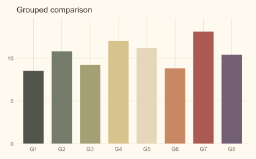
Colour / scatter
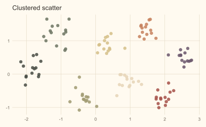
Colour / line
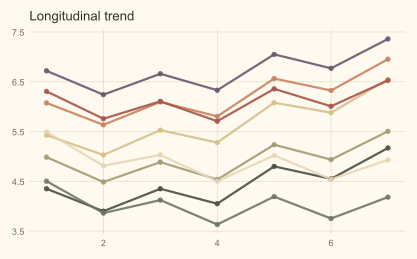
UMAP-like
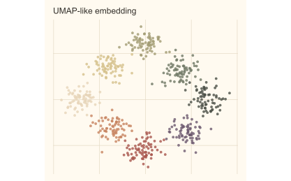
advanced family / retro
Retro Paper retro_paper
旧纸张和温暖土色：适合图文摘要、机制模块和多时间点趋势图。
#5F5A4A#8C8060#B8A878#E2D0A8#D8BFA3#B87962#8E5A58#586A73Fill / bar
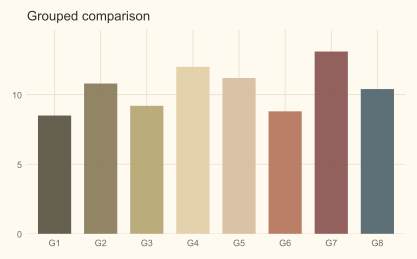
Colour / scatter
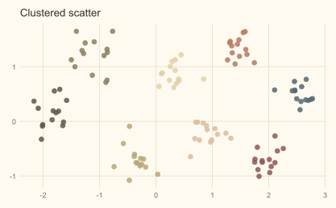
Colour / line
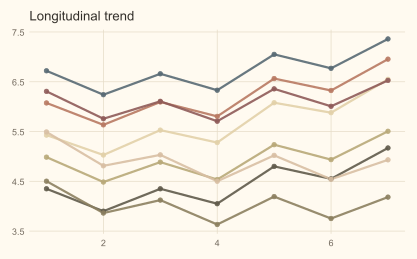
UMAP-like
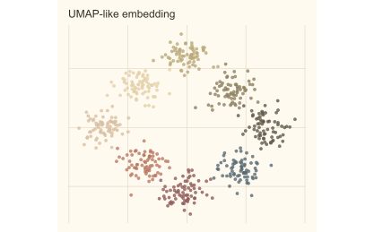
advanced family / retro
Retro Signal retro_signal
复古底色加清晰信号：适合干预组、疾病进展和主结果强调图。
#3F4A46#697464#9B956C#D3AE62#E4CDA6#C66F54#93485A#526A82Fill / bar
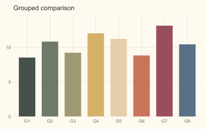
Colour / scatter
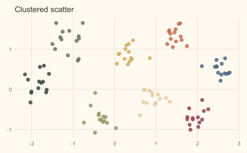
Colour / line
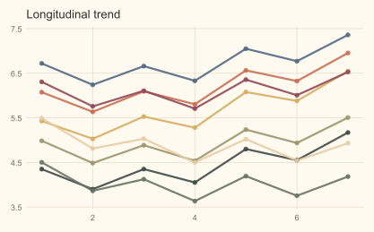
UMAP-like
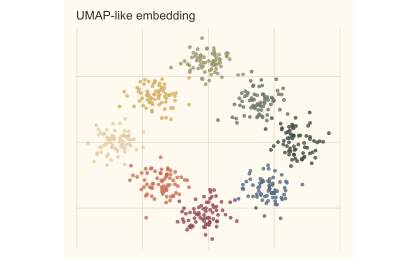